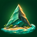

向未知的海岸出发
三角岩
大冒险。
一把镐，一座岛。
把荒野，变成你的家。
穿过棕榈林，敲开藏着晶体的三角岩。
从一簇营火开始，建造属于你的海岛营地。
全新的旅程 · 游戏进度自动保存
第一次来？查看操作说明 ＋
电脑：WASD 移动，鼠标转头，F 采集，空格跳跃。
B 打开背包与建造，E 使用设施，V 灵魂勘探。
iPad：左侧摇杆移动，右侧滑动转头，按钮采集与互动。

三角岩大冒险THE TRIANGLE FRONTIER开采 5 块三角岩 · 0 / 5
一把镐，一座岛。
把荒野，变成你的家。
穿过棕榈林，敲开藏着晶体的三角岩。
从一簇营火开始，建造属于你的海岛营地。
全新的旅程 · 游戏进度自动保存
电脑：WASD 移动，鼠标转头，F 采集，空格跳跃。
B 打开背包与建造，E 使用设施，V 灵魂勘探。
iPad：左侧摇杆移动，右侧滑动转头，按钮采集与互动。
WASD 移动 · 鼠标转头 · 左键或 F 采集
空格跳跃 · Shift 奔跑 · B 商城与背包
V 灵魂勘探 · 空格上升 / Q 下降 · R 朝向营地